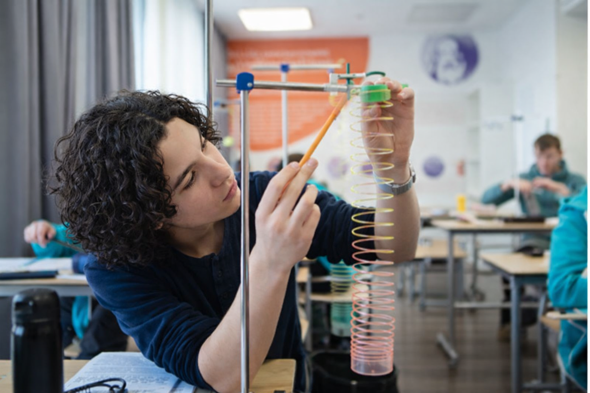

Ответьте на вопросы
Вы выбираете один из двух вариантов.
Школьный профориентационный проект
Помогаем школьнику понять, какой профиль обучения ему ближе
Ответь на вопросы теста и узнай, какой профиль обучения подходит именно тебе.
В этом режиме после завершения теста будет показана бинарная строка ответов для экспертной анкеты.

Понятно и просто
Вы выбираете один из двух вариантов.
Ответы сравниваются с экспертными шаблонами.
Сайт покажет профиль, который вам ближе.
Направления обучения
Математика, физика, информатика. Для тех, кому близки логика, расчёты и технологии.
Биология и химия. Для тех, кому интересны наблюдение, эксперимент и живые системы.
Биология, химия и математика. Для тех, кто любит естественные науки и работу с данными.
Математика и информатика. Для тех, кому нравятся алгоритмы, логические задачи и код.
Математика и физика. Для тех, кому интересны закономерности, расчёты и сложные задачи.
Физика, химия и математика. Для тех, кому важны вещества, явления и аналитический подход.
О проекте
Этот сайт создан как школьный профориентационный проект для учеников, которым предстоит выбор профиля обучения. В основе навигатора лежит тест с непрямыми вопросами, помогающий выявить склонности без прямого давления и шаблонных ответов. Результат не выбирает путь за человека, а помогает лучше понять свои сильные стороны.
Для экспертов
Если вы уже учитесь или работаете в одном из профилей, вы можете пройти экспертную версию теста и помочь улучшить точность системы.
Тестирование
В тесте нет правильных и неправильных ответов. Выбирайте тот вариант, который кажется вам более близким.